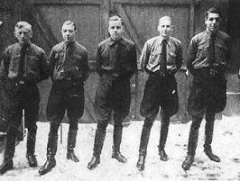
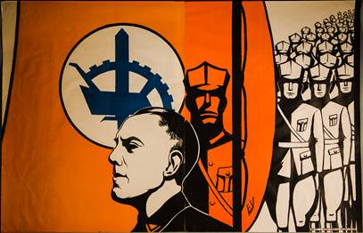

Mocht u tot nog toe nagelaten hebben uw ledenbijdragen
voor 2016 te vereffenen, dan kan dit alsnog via overboeking van
minimum 29 op onze rekening. In ruil daarvoor ontvangt u dan
alsnog het Jaarboek
Joris van Severen 2016 het 20e al tegen de ledenprijs.
Vereffening graag via onze rekening IBAN: BE71 0001 7058 1469
BIC: BPOTBEB1 t.n.v. Studiecentrum Joris van Severen,
Paddevijverstraat 2, 8900 Ieper.
Grote Fotobiografie Joris van Severen
en het Verdinaso
Deze prestigieuze uitgave is nog maar
beperkt voorradig. Deze uitgave in album-formaat met DVD-bijlage
waarop historische Verdinaso- en Jong-Dinaso-filmen naast
beelden van een bedevaart naar de graven van Joris van Severen
en Jan Ryckoort, wordt u portvrij toegezonden na overboeking van
55 (ledenprijs) of 65 (niet-leden) op de hierboven vermelde
rekening van het Studiecentrum te Ieper.
(Denkend aan Joris van Severen
en zijn geliefde Rachel Baes)
dan je witte as.
Alles waarmee je begeerde
of waarom je werd begeerd,
ligt nu diep onder het gras.
Je borsten als twee duifjes,
je ogen waarmee hinden kijken,
je lippen als een volle roos
en je haren als een waterval.
Niets blijft nu over
dan je witte as,
waarin ik met mijn vinger
je naam schrijf,
vooraleer de wind hem steelt
en gooit bij het kaf.
Niets blijft nu over
tot ik weer bij jou ben:
samen hoog in de hemel,
samen diep onder het gras.
Herwig Verleyen
Vlaanderen Een Vlag waait open
Emiel Buysse (*)
Onderstaande tekst
ontleenden we aan een anno 1934 in Nederland verschijnend
tijdschrift, dat Nederland als titel had. Het biedt een
beeld van hoe toen aldaar tegen het Verdinaso aangekeken werd
en welke verwachtingen het opriep. We pasten enkel de spelling
aan.
Maurits Cailliau
Een
Vlag waait open over 't Dietse Land: een vlammend teken. Het
oranje brandt rondom het witte wiel, waarin geheeld de
krachten staan, die een verdeeld en aan zichzelf
vertwijfelend, oude Volk herscheppen, dat het lééft onder Gods
schoon gewolk, in trouw en vrede."
Dit zijn de woorden die het begin vormen
van het spreekkoor, door Wies Moens, de Vlaamse dichter, de
Nederlandse dichter, geschreven, uit de volheid van zijn hart:
ter ere van Dietsland en van een jonge beweging waarin heel
Vlaanderen opgaan zal naar de overwinning; naar de
wedergeboorte. Joris van Severen stichtte het Verbond van Dietse
Nationaal Solidaristen op de puinen van een afgebrokkeld en
stuk-gekankerd Vlaams-Nationaal kasteel dat stuk móést gaan
omdat men onderaan de muren gaten kapte.
Als de jeugd in Vlaanderen niet meer weet
waarheen zij zich wenden moet, omdat aan alle kanten de wegen
tot voortgang zijn afgesloten, komt, als steeds, het redmiddel
voor de goedwillende, graag-strijdende jongeren van een land dat
het waard is om voor te kampen. De vlam van het
Vlaams-Nationalisme, van de Vlaamse beweging", is uitgedoofd.
De vlam moest doven omdat ze geen voedsel meer kreeg. De
vergiftiging van de volksziel kwam ditmaal niet van de Franse
kant, maar uit Vlaanderen zélf
De Vlaamse politiek had vele harten
veroverd en er was saamhorigheid in de gelederen. Deze
solidariteit uitte zich in de jaarlijkse bedevaart naar de
graven van de IJzer, waar, torenhoog, het monument verrees. Het
IJzerkruis, symbool van de wederopstanding van een volk dat zijn
doden eren wilde. Iedere Vlaming droeg het zijne bij om het
prachtige bouwwerk te helpen oprichten. En de mensen kwamen met
hun vlaggen en strijdbanieren getrokken naar de velden waar het
bloed der Vlaamse jongens vloeide, in de vier lange jaren van de
oorlog. Thans is het monument klaar. Maar nu is het
Vlaams-nationale ideaal, dat de Vlamingen hun symbolisch
IJzermonument deed bouwen, gedood en het zal niet meer
terugkeren in de oude vorm. En gelukkig! Want dit nationalisme
werd tot pacifisme en het idealistisch-pacifisme tot
plichtsverzaking, ontrouw en grenzeloze weekheid. De jaren gaan
snel en er is nu welhaast niets meer over gebleven van het
Vlaams-nationalisme dat voortkwam uit het activisme in de
laatste jaren van en in de eerste jaren na de oorlog. In de
januari-aflevering van dit maandblad hebben wij in het kort deze
strijd getekend. Het is goed dat het activisme, dat het
Vlaams-nationalisme er was. Het was de historische groei van een
beweging die weliswaar dood moest lopen, maar die de Vlaamse
jongeren ervaringen leerde en die een grondslag legde voor de
nieuwe tijd die thans aanvangt. De jeugd van een land stond op
en twee bewegingen ontstonden. Daar werd dan het eerst gevormd:
de rode jeugd, opgenomen binnen het kader der socialistische
partij. Het gebroken geweer kwam er aan te pas en de jongeren
leefden weldra, zoals in alle landen waar het socialisme, het
marxisme, bloeide, van haat en waandenkbeelden, opgesloten in
een demoraliserende, democratisch-rotte partijleer die geen leer
was; slechts een belangenprogramma voor de rode leiders die het
Vlaamse Volk uitkleedden en bedrogen, Het is goed, het is
voldoende zelfs, om te weten wat de marxisten in de staat België
konden presteren". Voor mij ligt een lijst der stakingen in
België, voor het strijdblad der Dietse Nationaal Solidaristen
verzameld door Juul Declercq. In de periode van 1 december 1932
tot 1 oktober 1933, kwamen in het hele land 96 stakingen voor,
waarvan er 1 door de arbeiders werden gewonnen .... Hier hoeft
niets meer bij gezegd te worden. Dit is de manier waarop de
leiders" van de Belgische werkliedenpartij de weg banen naar
een betere" toekomst. Met dit beeld voor ogen kunnen de
arbeiders uit het gehele land, en voornamelijk de Vlaamse
arbeiders, weten waarheen ze gaan. Dit ontzettende fiasco van de
stakings-apostelen bewijst ten volle de onmacht van het
marxisme. En, wanneer deze onmacht nog niet zo belangrijk mocht
zijn, zéér belangrijk is het bedrog waaraan de arbeiders onder
de partijleiding blootstaan. De mislukking van deze reeks
stakingen verbittert de arbeiders en weinig is nodig om deze
arbeiders met een paar brallende redevoeringen tot een nieuwe
staking te dwingen die dan wéér wordt verloren. Verloren, omdat
het partijensysteem en de klassenstrijd niet meer meekunnen. Hoe
kan men iets voor een deel van een volk winnen met een verouderd
strijdmiddel dat heeft afgedaan? Dit is de onmacht en de leugen
van het marxisme waaraan het Vlaamse volk bloot stond,
verscheurd als het was door een eindeloze, onderlinge twist.
Hieraan stond de jeugd bloot, omdat er geen tegenwicht was tegen
dit marxisme. Tot dat Joris van Severen in 1931 zijn Verbond
stichtte. Het Verbond van Dietse Nationaal Solidaristen, waarin
het beste deel van de Vlaamse jeugd zijn plaats vinden moest.
Tussen het rode socialisme en het oranje-wit-blauwe Nationaal
Solidarisme wordt het restje van het democratisch nationalisme
platgedrukt. Dit Verdinaso nu is ingesteld om geheel Dietsland
te omvatten. Dus een beweging, uitgaande van een Vlaams
initiatief, zowel voor Noord- als voor Zuid-Nederland. Het
Vlaams-Nationalisme", zegt het program der Dinaso's, is in
wezen, kan niet anders zijn dan: Nederlands, Diets
Nationalisme". Het Vlaams nationalisme zou dus zijn een
Nederlands nationalisme, hetgeen de jaren door al sterk tot
uiting kwam in de Groot-Nederlandse, Vlaamse beweging. Is het nu
echter omgekeerd óók juist dat het nationalisme in
Noord-Nederland, dat zich manifesteert in onze nationalistische
bonden en verenigingen, óók het Vlaamse nationalisme omvat? Wij
geloven het niet. Op enkele uitzonderingen na, is
Noord-Nederland, Holland", nog afkerig van de Vlaamse gewesten
en de Vlaamse inwoners. Ook in Noord-Nederland werken krachtig
enkele afdelingen van het Verdinaso, maar hun strijd is wanhopig
moeilijk. De Dinaso's in Holland immers, moeten de Hollanders
twee geheel nieuwe begrippen leren. Dat is in de eerste plaats
het begrip Dietsland" en in de tweede plaats de leer van het
Nationaal Solidarisme. Behalve de zuivere Groot-Nederlandse
gedachte, die nog vreemd is voor 90 % van de inwoners van
Noord-Nederland, en die zich hier aan ons voordoet, niet als
Groot-Nederland", maar als Dietsland", is er dan het Nationaal
Solidarisme dat vanuit Vlaanderen tot ons komt. Afgezien van het
feit dat dit Nationaal-Solidarisme zich wèl geheel aanpast bij
de Katholieke gedachtensfeer der Zuid-Nederlanders, maar niet
aantrekkelijk zal zijn voor de vrijgevochten" protestanten, de
Geuzen, uit het Noorden van Nederland, blijft er nog een,
misschien schijnbare, moeilijkheid, hoofdzakelijk een
gevoelskwestie, die echter blijken zal onoverkomelijk te zijn.
Hiermede bedoelen wij: Vlaanderen gaat ons hier voor; Vlaanderen
sticht bezuiden de landsgrens een beweging, die werkelijk
voortkomt uit de harten en de zielen van de Vlaamse mensen, en
tracht die naar Noord-Nederland over te brengen, over te
planten. Dit zal onmogelijk blijken te zijn. Niet omdat
Vlaanderen onze mindere is; niet of althans niet geheel door
het geloofsverschil, maar door verschil van mentaliteit die
niemand ontkennen kan. Een Noord-Nederlandse beweging zou
evenmin met succes ingevoerd" kunnen worden in Vlaanderen.
Want, de Vlaamse mentaliteit is hoofdzakelijk afkomstig uit de
Vlaamse beweging, uit het Vlaams-Nationalisme, dat ongetwijfeld
zijn goede werk heeft gedaan, maar dat aan ons,
Noord-Nederlanders, geheel voorbij is gegaan. Wie niet gevoeld
heeft, meegestreden en meegeleefd heeft met den kamp in
Vlaanderen, op zijn minst van na de oorlog tot nu toe, staat
vreemd tegenover de Vlaamse mentaliteit. En op deze mentaliteit,
die dus voortkwam uit een strijd waar wij ten onrechte
buiten stonden, berust de geest van het Nationaal Solidarisme.
Het zal onmogelijk blijken te zijn, die geest in Noord-Nederland
aan te kweken.
Uit het vorige nummer, uit het 1e artikel
over Vlaanderen, halen wij aan: Dan valt de scheiding tussen
Noord en Zuid (na de afscheiding der Zuidelijke gewesten die
Oranje in de steek laten). En in het Zuiden is er géén die durft
die muur omver te stoten. Vlaanderen gaat rusten, moede en suf
na de jaren van bloei en voortdurende strijd, terwijl een
frisse, krachtige Noord-Nederlandse republiek zich door den
vijand heen breekt onder de leiding der Oranjes." Wij kunnen in
zekere zin nu het omgekeerde schrijven. Noord-Nederland kan met
Vlaanderen niet mee, omdat de Vlaamse gewesten ditmaal midden in
een strijd staan waarvan het Noorden zich niets aantrekt. En in
deze kwestie durven wij ook voor de toekomst geen voorspelling
te maken. Bovendien is daar nog in deze de moeilijkheid van de
noodzakelijke afscheiding van Vlaanderen dat zich los zal moeten
rukken uit het Belgisch Staatsverband. Tegelijkertijd zal dan de
aansluiting bij Noord-Nederland moeten plaats hebben, wanneer
tenminste het Noorden óok klaar zou zijn voor de Dietse staat,
voor Dietsland, met de voorbereiding der Nationaal-Solidaristen.
Ook hieraan geloven wij niet. Vlaanderen is met het
Nationaal-Solidarisme het Noorden zóver vooruit, dat inhalen"
van het Noorden welhaast onmogelijk is. Bovendien werkt in
Noord-Nederland de krachtige beweging der Nationaal-Socialisten
van Ir. Mussert, en wederom lijkt het ons uitgesloten dat het
Dinaso deze N. S. B. zou kunnen verdringen. Afscheiding van
Vlaanderen en aansluiting van de Vlaamse provinciën bij het
Noorden zou een oorlog ten gevolge kunnen hebben in Europa.
Immers, de zaak is hier anders dan de verhouding
DuitslandOostenrijk. Men vergete niet dat Vlaanderen vast ligt
in de Belgische Staat en dat België op zijn beurt weer aan
Frankrijk geankerd is. De oplossing zou alleen gezocht kunnen
worden in een gelijktijdige afscheidingswil van Vlaanderen èn
van het Walenland; waarbij Vlaanderen dan naar het Noorden gaan
zou en Wallonië zich bij Frankrijk zou aansluiten. Dit lijkt
fantastischer dan het is. Immers, een dergelijke beweging:
Wallonië bij Frankrijk terug", bestaat! Hierdoor zou de
Belgische Staat vanzelf verdwijnen. Het is inderdaad een
Europees vraagstuk, die afscheidingskwestie - en, het spijt ons
dat wij het moesten constateren, het Dinaso houdt met de boven
besproken moeilijkheden tè weinig rekening. Men werkt op het
ogenblik voor de vorming van een krachtige kern, die de
grondslag zal zijn voor de grote Dietse beweging.
En er gaat tóch zo'n onnoemelijke kracht
uit van die jeugdgroep in Vlaanderen, die strijdt onder de
Dinaso-banier. Van Severen koos zijn kleuren voor die banier:
oranje, wit, blauw. In een oranje veld een witte cirkel, waarin
staan afgebeeld: een ploeg en een rad, symbolen van de Dietse
landbouw en nijverheid; symbolen van de werkkracht van een volk.
En daarvoor een zwaard, om het hoogste goed te verdedigen. Die
vlag is opengewaaid over het land, over Vlaanderen wanneer wij
Noord-Nederland er nu buiten houden en het moet gezegd worden
dat er een alleszins grote kracht uitgaat van dit jonge verbond.
Met het Dinaso kwam de geest van dapperheid en energie weer over
Vlaanderen, na de jaren van democratisch verval. De jeugd van
Vlaanderen bouwt hier een nieuwe beweging die, hetgeen ze
bewezen heeft bij de stormaanvallen van het marxisme in Gent en
Brussel, de rode terreur met goed succes kan weerstaan. Het
Dinaso trok de arbeider; het gaf den volksjongen zijn land en
zijn idealen weer; zijn liefde voor de arbeid en zijn geloof in
rechtvaardigheid en vrede. Het Dinaso bracht de student weer
dichter bij de belangrijke taak van het leven in Vlaanderen, Het
Dinaso, tenslotte, maakte een eind aan de dancingjeugd, aan het
danskroeg-nationalisme in Vlaanderen, Geen jazz van negers, geen
zotte tango-dansen van dronken Zuid-Amerikanen en Spanjaards;
geen gebroken-geweertjes-pacifisme en dwaze weekheid. Maar een
levend, kerngezond Vlaams lied en een schallende lach. Dinaso
trekt voort en ként zijn taak. Kent zijn vrienden en vijanden.
Vrienden: geheel het Nederlandse volk, in Noord-Nederland, in
Vlaanderen en in een deel van Frankrijk, het gebied om
Duinkerken. De vijanden volgens het Verdinaso-programma:
a) De vreemden, die de integriteit en de
gezondheid der natie bedreigen en aantasten. Op dit ogenblik in
de eerste plaats: de Fransen, Walen en Franskiljons. b) De
machten die de natie willen beheersen om eigen voordeel: het
geld en de vrijmetselarij. c) de machten die de natie
ondermijnen of zoeken uiteen te rukken: het liberalisme; het
partijenstelsel; het marxisme en de klassenstrijd-propaganda; de
materialistische levensbeschouwing in al haar uitingen.
De Staat, die gebouwd wordt door de
Nationaal-Solidaristen, is de Dietse Volksstaat, die gevestigd
is op rechtvaardigheid en die zijn hoogste taak vindt in het
bevorderen van den opgang aller leden der Dietse Natie naar de
vervolmaking hunner zedelijke persoonlijkheid; in het scheppen
en in stand houden van de goede verhoudingen, welke veilig
stellen voor een ieder: de bereiking van zijn eindbestemming,
zijn eeuwig Goed: God, Bron van alle Recht en van alle Orde. Dit
is, in 't kort, het hoge doel der Dinaso's. Zullen zij het
bereiken? Zeker is, dat de Dinaso-geest onverwoestbaar sterk
leeft in de harten der jonge Vlamingen. Wie over de landwegen de
militianen ziet marcheren kan niet ontkomen aan de sterke indruk
van krachtige discipline, voorbeeldige tucht en bereidheid tot
offeren. Hier marcheert, zoals in alle fascistische bewegingen,
de arbeider naast den student; de rijke naast den arme. Door het
Verdinaso werd in de Vlaming het geloof in rechtvaardigheid,
geluk en vrede herboren. Vooral in de jongen Vlaming, die, zoals
honderdduizenden jongeren uit al heel de wereld, geen toekomst
meer zag; geen God, geen geluk en geen geloof, werd de leer van
het Verdinaso een vlam die hoog oplaait; die hem moed en
vertrouwen geeft.
Een Dinaso, Leo de Roover, kon in het
strijdblad Hier Dinaso!", in oktober 1932, schrijven: Want het
leven is voor ons, als voor geen ander, barmhartig geweest.
Vermetel en onontkoombaar heeft het ons gedwongen, in de
onnoemelijke goorheid en kleinheid van de hedendaagse tijd groot
te worden, en hoog te moede, al de krachten van onze ziel op te
stoten, tot het verwinnen van waarden die onvergankelijk zijn."
Deze Leo de Roover kon het uiten. Zijn kameraden-Dinaso's kunnen
het misschien niet, maar zij voelen allen hetzelfde in hun hart.
Bij deze overwinning van de Vlaamse jeugd is het geen wonder dat
de Kunst opbloeit en wordt onder de handen van de jonge
letterkundige, van den schilder en beeldhouwer. Wij bedoelen
hiermee niet dat ieder Vlaams kunstenaar een Dinaso is! Maar de
nieuwe geest die over Vlaanderen en over heel de wereld gaat
de geest die brandt en rijpt in de harten van de jongeren en van
vele ouderen die terugkeerden op de weg van het platte marxisme
en de domme democratie pakt ook de kunstenaar beet. Weten zij
het in Holland wel dat er in Vlaanderen jonge letterkundigen
leven en werken waaraan de Noord-Nederlandse kunstenaars een
voorbeeld kunnen nemen?
Hoe kent men Gerard Walschap in
Noord-Nederland? Wat leest men, en vooral: hoe leest men hem?
Maakte men kennis met Raymond Brulez, met Willem Putman, Maurits
Roelants, Ernest van der Hallen en Theo Bogaerts, om er maar
enkele op te noemen? Zo neen, dan wordt het hoog tijd dat
Noord-Nederland daarmee begint. Het nieuwe Nederland dat,
evenals Vlaanderen, worstelen moet met een
funest-materialistische geest, voortgekomen uit het marxistisch
socialisme, behoort het leven te volgen van de vijf miljoen
Nederlanders, die werken bezuiden de willekeurig getrokken
Staatsgrens.
Een vlag waait open!" Het is het symbool
van het nieuwe leven in de Vlaanderens, al is ieder nieuw leven
niet direct onder invloed van het Verdinaso. Bij de literaire
opkomst van het nieuwe Vlaanderen zullen wij ons thans alleen
bepalen tot de jonge schrijver Theo Bogaerts.
[volgt een korte beschrijving van het
oeuvre van deze auteur n.v.d.r.]
In dit begin van de twintigste eeuw gaat de
zon op over een land dat, sterker dan menig ander land, lijden
moest onder een ziekelijk verval. Vlaanderen verheft zich.
De liefde van een volk maakt Vlaanderland
groot en machtig. Worde dit heerlijk streven, deze ontzaglijke
worsteling van een volk ons bekend, want: Een vlag waait open.
E. B.
_______________
(*) Emiel Jozef Corneel Buysse
(Terneuzen, 15 oktober 1910 Sint-Andries-Brugge 9 augustus
1987) was een Nederlands-Vlaamse auteur.
Bron:
Nederland jrg 86, 1934 [volgnr. 2],
pp. 220-230. Geraadpleegd op Delpher op 30-08-2016,
http://resolver.kb.nl/resolve?urn=dts:929002:mpeg21
Scriptieprijs Studiecentrum Joris van Severen
Het Studiecentrum Joris van Severen is een vereniging die
de studie naar de persoon en de ideeën van Joris van Severen
(1894-1940) wenst te bevorderen. In de loop van de afgelopen
decennia is daartoe een archief aangelegd rond Joris van Severen
en zijn bewogen politieke loopbaan, in het bijzonder het Verbond
van Dietse Nationaal-solidaristen (Verdinaso). Dit archief is in
2000 overgedragen aan de universiteitsbibliotheek van de
Katholieke Universiteit Leuven en werd aldaar ondertussen
grotendeels geïnventariseerd door dr. Bart Coppein.
Het doel van de archiefoverdracht was om de
wetenschappelijke studie over Joris van Severen en het Verdinaso
te stimuleren. Het Studiecentrum wil deze studie actief gaan
bevorderen door het instellen van een scriptieprijs voor
studenten, waar een geldbedrag van 500 aan is verbonden.
Graag zouden we iedereen willen vragen om deze
scriptieprijs onder de aandacht te brengen van studenten en van
de bij u bekende professoren. Het Joris van Severen-archief aan
de KU Leuven is nog grotendeels onontgonnen en een
wetenschappelijke biografie ontbreekt vooralsnog. Er is met
andere woorden sprake van historisch onontgonnen terrein en ook
ideologisch roept de persoonlijkheid van Joris van Severen nog
steeds veel vragen op rond zijn politieke ontwikkeling. Ook is
er nog nauwelijks iets bekend over de samenstelling van zijn
aanhang.
Op basis van minimaal twee inzendingen zal een commissie
binnen het Studiecentrum de prijs al dan niet toekennen aan een
scriptie die handelt over de persoon Joris van Severen, het
Verdinaso of één van de naoorlogse Nachfolge-bewegingen. De
scriptie hoeft niet noodzakelijk een eindscriptie te zijn, maar
dient minstens vijftien A4-pa-ginas omvatten. Het Studiecentrum
Joris van Severen zal de uitreiking van deze scriptieprijs
gepast omkaderen en de auteur de gelegenheid bieden om de
scriptie te publiceren in het jaarboek van het Studiecentrum. De
auteur zal een exemplaar van het jaarboek en tien nadrukken
ontvangen. Mocht u nog vragen of opmerkingen hebben, aarzel dan
niet om contact met ons op te nemen.
Voor de beoordelingscommissie, Drs. R.A.B. Bruijns p/a
Secretariaat Studiecentrum Joris van Severen, Paddevijverstraat
2, 8900 Ieper. Epost: maurits.cailliau@skynet.be
Rosa Delercq (Izegem 1 januari
1930 Izegem 16 juni 2016). Rosa was een dochter van Juul
Declercq die binnen het corporatiewezen van het Verdinaso een
voorname rol gespeeld heeft; ze was lid van het Jong-Dinaso.
Karel Frans
Marcel de Troeyer (Turnhout
31 mei 1917 Beerse 21 juni 2016. Zijn overlijdensgedachtenis
vermeldde lid van het Verdinaso. Al op zn 17e was hij
ploegleider van de DMO in het Turnhoutse. Enkele jaren terug
kregen we uit zijn fotoalbums een reeks helaas in te geringe
resolutie ingescande fotos uit zijn Dinaso-tijd bij de DMO,
waaronder bovenstaand beeld, waarop links Marcel.
Gaston Goorden (Antwerpen 3
november 1920 Mortsel 2 augustus 2016). Hij was lid van het
Jong-Dinaso en daarna van het Verdinaso helemaal op het einde,
naar eigen zeggen. Daarna werd hij actief bij de scouts, waar
hij het tot districtscommissaris VVKS bracht. Hij werd
licentiaat Handels- en Financiële Wetenschappen en ook Maritieme
Wetenschappen en richtte zijn eigen bedrijf op dat in veevoeder
handelde. Daarnaast was hij een alom gerespecteerde rechter in
Handelszaken.
Hij was lange jaren
secretaris van de Orde van den Prince, afdeling Middelheim, en
op zijn uitvaart stond de oranje-blanje-blauwe standaard van de
Orde pal naast zijn kist. Alhoewel in Mortsel geboren, had
Gaston de Nederlandse nationaliteit, die hij nooit heeft willen
afgeven, ondanks de problemen die hem dat heeft gesteld.
Wij houden hem in
herinnering als een even gemoedelijke als principiële man, een
Dietser van een spreekwoordelijke correctheid. Hij was
vanzelfsprekend lid van ons Studiecentrum.

Verdinaso-affiche
die
de verbondenheid tussen leider en volgelingen symboliseert
Titel
auteur
jaar
vorm prijs
JvS en de Nederlanden
L. Delafortrie
1963 boek 8
Vermoorde Van Severen
herleeft
L. Delafortrie
1994 boek 5
Joris van Severen
L. Wils
1994 boek 5
De Tragische dood van JvS
F. van Berkel 1960 boek 10
Recht en Trouw
J. Creve
1987 boek 15
Joris van Severen spreekt
Gedenkboek 1894-1994
M. Cailliau e.a.
1994 boek 30
Die vervloekte oorlog,
dagboek
J. van Severen
2005 boek 30
Joris van Severen, droom
en daad
A. de Bruyne
1961 boek 40
(genummerde en door de
auteur getekende luxe-uitgave)
Joris
van
Severen, droom en daad
A. de Bruyne
1961 boek 10
Joris
van
Severen, droom en daad
A. de Bruyne
1983 boek 10
Rouwprentje
Joris
van Severen
Nederlandstalig
1940
15
Rouwprentje
Joris
van Severen
Franstalig
1940
10
Zoo
sprak
de Leider
Verdinaso
1940 broch 15
Hugo
Verriest
Joris van Severen
L. Delafortrie e.a.
1985 boek 10
Joris
van
Severen, het verhaal
van
een
leven (2 delen)
A. van Severen
1995 boek 50
Nieuwe richtlijnen
J. van Severen e.a.1935
boek 10
De strijd om de vereniging
der Nederlanden
Willem Melis
1935 boek 10
De maatschappijleer
van het Verdinaso
R. v. d. Bossche
1977 boek 10
Een leider verovert zijn
volk
Verdinaso
1935 fotobroch
20
De Grondbeginselen van het
Dietsche Nationaal
Solidarisme
Jef de Langhe
1935 broch 10
Joris van Severen
Vader des Vaderlands
Louis Gueuning
1945 broch 8
Joris van Severen
Père de la Patrie
Louis Gueuning
1944 broch 5
Joris van Severen
André Belmans
1945 broch 8
Wij kiezen de corporatieve
orde
Verdinaso
1935 broch 2
In de leer bij Joris van
Severen
André Belmans
1940 boek 5
Echt en namaak: Dinaso en
fascisterij
S. Verrel
1935 broch 5
De corporatieve orde en de
opvoeding
Verdinaso
1935 broch 8
De boer en het
corporatiewezen
J. v.d.Bulcke 1935 broch 10
Joris van Severen, droom
en daad
A. de Bruyne
1983 boek 10
Verbond van Dietsche
Nationaalsolidaristen Programma 4e, 5e
of 7e oplage
8
Ligue des Solidaristes
Thiois Programme Verdinaso
1935 broch 8
Drie redevoeringen van JvS
J. van Severen
1938
broch 12
Juul Declercq, de vurige
Vlaming
V. Eggermont
1992
broch 12
Wat is en wil het Dinaso
Pol le Roy
1932 broch 10
Orde in België
Pol le Roy
1938 broch 2
Zuid-Afrika wordt Dietsch
bezit
Jong-Dinaso
1939
broch 6
Laat ze niet rotten, o
Vlaanderland
C. Verschaeve
1935 broch 8
Le Verdinaso
J. van Severen
1939 broch 6
Mission de Peuple des
Pays-Bas
André Belmans
1942 broch 6
Mémorial Joris van Severen
Aartselaar
1966 broch 5
En avant pour lordre
corporatif
Verdinaso
1935 broch 8
Petite histoire de la
nation des Belges Jong-Dinaso
1940 broch 10
Ter waarheid over Joris
van Severen 51
nummers 1983-1996 tijdsch
50
Van Severen had gelijk
1936 pamflet
5
Boodschap over de
Dinaso-zending Louis
Gueuning
1945 broch 10
Message sur la mission du
Dinaso Louis
Gueuning
1945 broch 10
Het bloedbad van Abbeville
M. van Gijsegem
1941 boek 15
Waarheen Dinaso?
Verdinaso
1936 broch 3
Waarheen gaat het land?
Verdinaso
1936 broch 2
De Uitweg, maandblad
Louis Gueuning
1965
2
Rouwprentje Joris van
Severen
Nederlandstalig
1940
15
Rouwprentje Joris van
Severen
Franstalig
1940
10
Losse nummers Hier Dinaso!
1937-1941
p. stuk
5
(lijst op aanvraag)
Interesse
voor een of meerdere titels uit bovenstaand aanbod? Neem
dan onverwijld contact op met: Charles Bayart, Berg 5,
8980 Beselare, tel. 0475-555 481, e-adres: charles@drankenbayart.be
In deze rubriek
verwijzen we zonder veel commentaar naar recente publicaties
waarin Joris van Severen en/of het Verdinaso vermeld worden.
We citeren de meest treffende passussen woordelijk zonder
daarin volledigheid na te streven. We verzoeken onze lezers,
met ons, uit te zien naar publicaties die voor deze rubriek
'stof' kunnen leveren en ons kopie van de betreffende passages
toe te sturen.
Dat weten we dan ook al weer
over het
hedendaagse intellectuele peil
(
) Belangrijkste feit dat mijns inziens
de [Vlaamse] Beweging steeds geblokkeerd heeft, is interne
strijd, en het onvermogen om op een verbindende, pluralistische
manier krachten te bundelen voor die onafhankelijkheid.
Voorbeelden zijn legio, en beginnen al voor 1830: de
verschillende stromingen tijdens de Brabantse Omwenteling, begin
20e eeuw: passivisten en activisten, de onfrisse periode tijdens
het interbellum met de uitspattingen van Rex-Vlaanderen,
Verdinaso en VNV die tenslotte alles opslorpte, het uiteenvallen
van de Volksunie door het Egmontpact, maar ook de onwil van
bijvoorbeeld N-VA en Vlaams Belang om samen te werken rond
Vlaamse onafhankelijkheid valt te kaderen binnen die interne
strubbelingen.(
)
__________
Nils Abbeloos, kernlid Vlinks, in Knack, 9 april 2016
Verdinaso en nazaten
Als fascistische of nationaal
socialistische beweging in Nederland kennen we eigenlijk alleen
de NSB van Mussert, maar er waren er voor de oorlog meer.
Verdinaso was een fascistische jeugdorganisatie, die uit het
België van de dertiger jaren is komen overwaaien naar katholiek
Nederland.
Oprichters waren Joris van Severen en Wies
Moens. De eerste is nog voor de oorlog geëxecuteerd door de
Fransen. De laatste is in België voor collaboratie ter dood
veroordeeld en heeft in Nederland na de oorlog asiel gekregen.
Dat kreeg hij niet omdat we hier iets hadden met collaborateurs,
maar omdat we die doodstraf wat overdreven vonden. Zoals die
achteraf gezien ook voor Mussert wel overdreven is geweest.
Moens en Mussert zijn veroordeeld voor hun symboolwaarde meer
dan voor de misdrijven die ze gepleegd zouden hebben. Die
doodvonnissen zijn niet helemaal in overeenstemming te brengen
met de idealen waarvoor aan de geallieerde kant de oorlog werd
gevoerd. Het hebben van verkeerde opvattingen is immers juist
datgene wat door de vrijheid van meningsuiting wordt beschermd.
Tegen juiste opvattingen heeft niemand bezwaar, daar heb je geen
vrijheid voor nodig.
Na de oorlog en vooral in de zestiger jaren
heeft alles wat met nationaalsocialisme en fascisme te maken had
mythische proporties gekregen. Men volgde de communisten in hun
gelijkstelling van fascisme en nationaalsocialisme en beschouwde
die twee stromingen gezamenlijk als het Grote Kwaad.
Daarom is het zo interessant om die drie,
communisme, fascisme en nationaalsocialisme te bekijken vanuit
een standpunt van de dertiger jaren, toen het voor veel mensen
nog aanvaardbare alternatieven waren voor het liberale
humanisme. In die tijd was de Holocaust nog niet meer dan een Alptraum in het
achterhoofd van Adolf Hitler.
Over de normen en waarden van de Engelse upper middle class in de
Napoleontische tijd leer je het meeste door het lezen van Jane
Austen. Zo kan iemand het salonfähige
fascisme van de dertiger jaren het beste leren kennen via
bellettrie uit die periode of misschien nog beter door de
biografieën en briefwisselingen te lezen van mensen uit die
tijd. De brievenverzameling van de Mitford sisters, die
Charlotte Mosley heeft gepubliceerd onder de naam Ladies who sign, is
een goed voorbeeld.
Een ander boek over hetzelfde onderwerp dat
inzicht geeft in de mentaliteit van de vooroorlogse hogere
standen in Engeland, Frankrijk en Duitsland is The House of Mitford
van Jonathan Guinness.
Guinness, nu lord Moyne, is een zoon uit
het huwelijk van Bryan Guinness en Diana Mitford. Zijn ouders
zijn gescheiden toen hij nog jong was en hij is opgegroeid
binnen het tweede huwelijk van zijn moeder die in 1936, toen hij
zes was, trouwde met Oswald Mosley, de leider van de Britse
fascisten.
Mosley kwam net als Diana Mitford uit een upper class family. Hij
had een prima oorlog record in The Grand War. Hij werd
pas fascist toen zijn ideeën om de crisis te bestrijden werden
verworpen door de regering van Ramsay MacDonald, waar hij deel
van uit maakte. Die ideeën waren gebaseerd op het werk van John
Maynard Keynes, maar zoals bekend hadden Roosevelt, Hitler en
Mussolini op economisch terrein eigenlijk soortgelijke ideeën
als Keynes.
Diana en haar jongere zuster Unity Mitford
waren persoonlijk bekend met Hitler en nogal van hem onder de
indruk. Een van de andere zes Mitford zusters, Jessica, Decca
voor intimi, was communiste. Ze liep weg van huis, trouwde met
een neef van Winston Churchill, ook een communist en trok met
hem naar de Spaanse burgeroorlog. Later werd ze journaliste in
Amerika en raakte daar bekend met de familie Kennedy.
De oudste zuster is de bekende
romanschrijfster Nancy Mitford. Haar boeken, vooral Love in a cold climate
en The Pursuit of love
zijn niet alleen grappig en een genoegen om te lezen, maar
hebben een autobiografische en informatieve inslag.
Mosley c.s. zijn de Engelse pendant van de
Belgisch-Nederlandse Verdinaso beweging die de katholieke
studentenbeweging in de dertiger jaren in twee elkaar
bestrijdende kampen splitste.
De vader van een jeugdvriendinnetje was
voorzitter geweest van de Amsterdamse studentenvereniging
Sanctus Thomas Aquinas en in die functie de grote tegenstander
van Verdinaso. Ik ben lid van die vereniging geweest aan het
eind van de vijftiger en begin zestiger jaren en heb daar nogal
wat kinderen van die Verdinaso-ouders meegemaakt. Die waren toen
praktisch zonder uitzondering links tot zeer links. Dat
suggereert hoe verwant radicale linkse en rechtse stromingen
zijn en hoe Jacques van Doorn gelijk had door
nationaalsocialisten en andere soorten radicale socialisten
onder dezelfde noemer te brengen. Willem Aantjes was geen
uitzondering, heus niet. Die constatering is geen populaire
opvatting in een progressief land als het onze, maar er bestaat
vrijheid van meningsuiting hier, gelukkig.
________________
Bron:
https://akasdorp.wordpress.com/2015/02/11/verdinaso-en-nazaten/